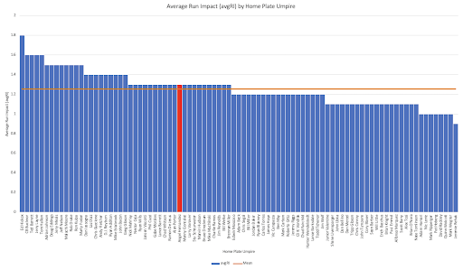
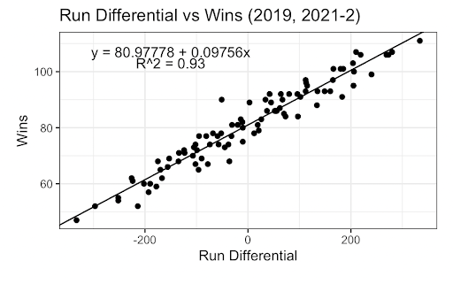
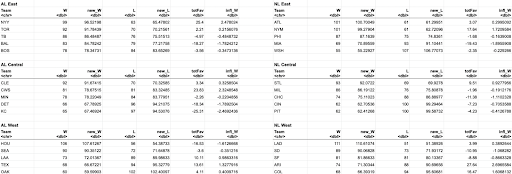
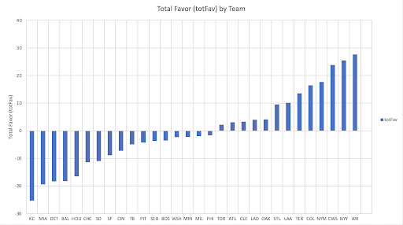
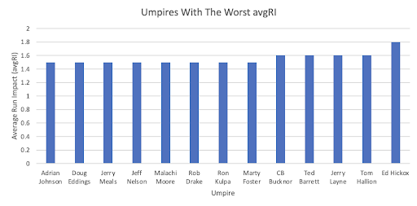
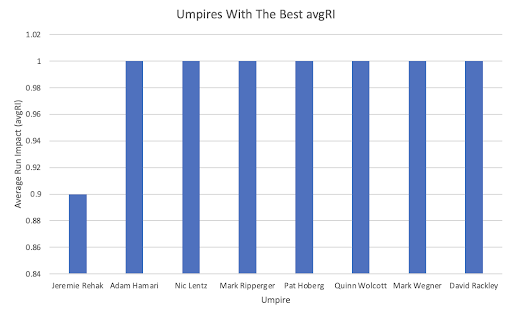

Does MLB Have an Umpire Problem?
By CJ Lu Sing | Novemeber 10, 2022
Consequently, MLB’s home plate umpires are closely scrutinized universally by teams, the league, and the fans. For example, blown calls, like a called strike three inches off the plate, with the potential to drastically change a game’s outcome, regularly provoke public outcry across the country. With the increased presence of pitch tracking technology, these mistakes are made obvious to everyone from fans at home to Commissioner Rob Manfred.
Recently, the latter party, the Office of the Commissioner of Baseball, signaled MLB would take steps to end the plethora of incorrect calls plaguing the game. In the 2022 Minor League Baseball season, U.S. professional baseball’s first automated strike zone system debuted in the Triple A Pacific Coast League. However, analyzing the readily available data, the baseball world may have been wrong about MLB’s umpires.
Measuring Umpire Run Impact
The umpire watch dogs, Umpire Scorecards, which is widely known for their Twitter account, spent the past few years aggregating data on umpire performance from Fangraphs. Two statistics provide shocking information: avgRI (average run impact) and totFav (total favor).
In baseball, each called pitch should go in the favor of the pitcher or the batter. When an umpire calls a strike that should have been a ball, the pitcher is favored. Inversely, when an umpire calls a ball on a would-be strike, the batter is favored. The favorability of a count impacts how a plate appearance goes. An 0-2 count is more likely to produce an out than a 3-0 count. Over nine innings, these mistakes add up contributing to an umpire’s run impact for that game. Average run impact, or avgRI, as defined by UmpScorecards, takes “The absolute value of the run impact of each missed call by the umpire, across all games umpired by the umpire, divided by the number of games umpired by the umpire.”
The second, total favor, measures “The sum of the Total Batter Impact for the team and Total Pitcher Impact for the team.”

The histogram above shows the average run impact of each home plate umpire during the 2022 Major League Baseball regular season (minimum ten games umpired). Average run impact varies greatly from Jeremie Rehak’s 0.9 avgRI to Ed Hickox’s comparatively astronomical 1.8 avgRI. Slightly more than half of umpires, or 46 out of 90, had an avgRI higher than the mean of 1.26 avgRI. The notorious Angel Hernandez (highlighted in red on the histogram) had a 1.3 avgRI.
Generally, more accurate umpires will have a lower average run impact. This is an important feature of baseball because just one run of impact is enough to potentially change a game’s outcome. To determine how much MLB umpires’ collective run impact impacted a season, it is necessary to understand how much runs impact the game.
Predicting Wins Based on Run Differential
Every MLB season, each of the thirty teams have a corresponding run differential, which is the runs their offense scores minus the runs their pitching staff allows.
In the 2022 regular season, the Los Angeles Dodgers had a +334 run differential, which was the highest in Major League Baseball. The 2022 Washington Nationals had a -252 run differential, which was the league lowest. Interestingly, the two teams had the league’s best and worst records respectively, which indicates run differential’s status as a great predictor of a team’s final record.

A linear regression analysis supports the idea that a team’s run differential predicts the same team’s win total. As a team’s run differential increases, so does their win total. With an R^2 of 0.93, 93% of the variability in a team’s number of wins can be attributed to run differential alone. The data, sourced from the past three 162-game seasons, demonstrates that an increase of 0.09756 runs produces a single win.
Therefore, if the run impact created by umpires over a single season changes a team’s run differential enough, that may be enough to change the entire league’s final record.
The “Real” 2022 Standings
Returning to the statistics collected from Umpire Scorecards, total favor (totFav) is a season-long measurement of “The sum of the Total Batter Impact for the team and Total Pitcher Impact for the team.” The league’s non-run impacted records can be determined by multiplying each team’s totFav by their corresponding actual win total to get a new statistic influenced wins (infl_W). The number of non-impacted wins, here called new_W, can be calculated by subtracting a team’s new_W by their infl_W. The number of losses can thus be calculated from 162 minus new_W.
The 2022 standings can be updated by taking into account infl_W.

These updated rankings provide each team’s record if the outcome of their games was not impacted by umpires. The New York Mets would no longer be a 100-win team and the Chicago White Sox would finish under .500. However, looking deeper, the updated standings are only slightly different from the actual 2022 standings, and the division rankings are identical.
If the 2022 MLB Postseason were played using the updated standings, the bracket would be completely the same. The Dodgers, Houston Astros, Atlanta Braves, and New York Yankees would still receive first round byes, and the Wild Card matchups would be unchanged.
In the modern era of baseball, first place teams regularly outmatch the rest of their division. Only in the closest divisional or Wild Card races would umpire run impact alter the postseason picture. For example, if the 2022 Braves and Mets switched totFav with each other, the Mets would have been atop the NL East and had a first round bye. This scenario would have allowed the Mets to automatically advance to the National League Division Series instead of facing defeat in three games with the San Diego Padres in the Wild Card Round.
Evaluating MLB’s Umpires
Although totFav made no impact on the 2022 postseason picture, teams did have different records because of umpire run impact. Some teams benefited from incorrect calls far more than others.

Data from the 2022 season reveals that the Arizona Diamondbacks received the most total favor from home plate umpires. Their totFav was 27.64 runs. On the other hand, the Kansas City Royals had a totFav of -25.31 runs. There needs to be steps taken to equalize the playing field from an officiating standpoint.
However, the minimal impact on season standings should prove to Major League Baseball that an automated strike zone would be an extreme measure. MLB should work to put the best umpiring talent behind the plate at games.

There were 13 MLB umpires with a minimum of ten games behind home plate and an avgRI of at least 1.5 runs. Ed Hickox had an astronomical avgRI of 1.8 runs. These umpires’ incorrect calls, on average, would be more than enough to sway the momentum in a close game.

However, in contrast, there were seven umpires with an average run impact of just one run: Adam Hamari, Nic Lentz, Mark Ripperger, Pat Hoberg, Quinn Wolcott, Mark Wegner, and David Rackley. Jeremie Rehak stood out from the pack with an avgRI of only 0.9 runs.
If Major League Baseball decides to forgo an automated strike zone, the league should instead choose to reward umpires for good performance. This season, nearly half of umpires, or 44 out of 90, had an avgRI below the mean. These umpires with a lower impact on gameplay should be allowed to call more games from behind home plate.
Moreover, these lower-impact umpires clearly approach their job differently than the 46 umpires who scored higher than the mean. Umpires like Jeremie Rehak have approaches to the game that MLB should study and attempt to replicate in umpire training. The difference may be small, but in a game where inches can decide whether a team goes home or not, better umpires are better for everyone.
Conclusion
Today, every fan is an umpire with the strike box overlaid on television broadcasts and exact pitch locations provided on the MLB app. However, on the field, umpiring is a difficult job that will inevitably come with mistakes.
Major League Baseball has and will continue to explore the possibility of an automated strike zone on all levels. However, if MLB makes a concerted effort to minimize the errors of their umpires, the impact of an errant incorrect call should be negligible in the scope of a season.